Một tác phẩm thị giác về tình yêu, ký ức và những khoảng lặng cần được lắng nghe.
Bản tình ca Indie Pop chạm đến trái tim hàng triệu người nghe
“Kìa màn đêm hiu hắt mang tên em...”
Tác phẩm được khắc họa như một bản độc thoại tự sự mộc mạc của Vũ, mang giai điệu hoài niệm nhẹ nhàng nhưng day dứt khôn nguôi.
Nội dung giàu cảm xúc & Dễ dàng khơi gợi sự đồng cảm tự nhiên
Một giai điệu sinh ra để được kể bằng ánh mắt, sự tĩnh lặng và những khoảng không gian trống.
Bài hát không ồn ào mà đi thẳng vào những ngõ ngách cảm xúc chân thực nhất của tình yêu. Ca từ giàu chất thơ mở ra không gian điện ảnh đa tầng về tình cảm, ký ức và sự đổi thay tinh tế của con người theo năm tháng.
Ba trụ cột cảm xúc định hình linh hồn tác phẩm
Đưa người xem đi qua từng biên độ: say mê thuở đầu, trăn trở hoài nghi và sự tiếc nuối sâu lắng.
Nhắc nhở mỗi người hãy biết trân trọng những khoảnh khắc đời thường và thấu hiểu người bên cạnh.
Giúp mỗi người xem nhận thấy một mảnh vỡ ký ức và bóng hình của chính mình trong từng thước phim.
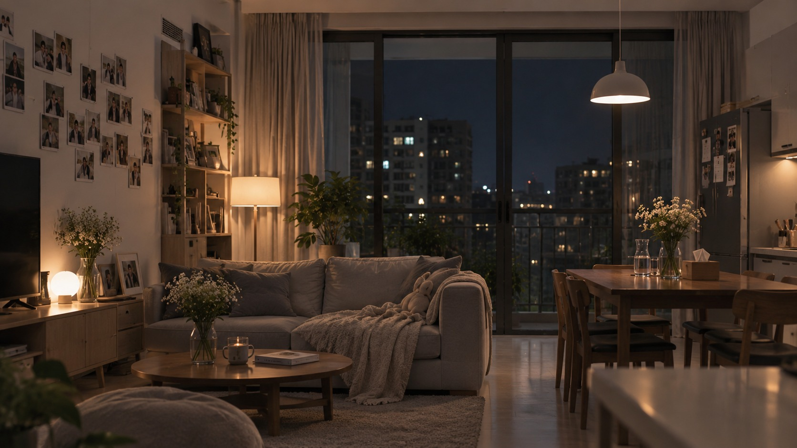
Trang 15 (Không gian căn hộ ấm cúng - lát cắt đời thường)Chủ đề: Tình yêu, nỗi nhớ và sự chuyển biến cảm xúc giữa hai người
“Hãy trân trọng tình yêu và những khoảnh khắc bên nhau, bởi đôi khi khi nhận ra sự quan trọng của một người thì mọi thứ đã trở thành quá khứ.”
Tình yêu không mất đi vì những biến cố lớn lao, mà thường phai nhạt bởi sự im lặng và những thói quen không còn được sẻ chia.
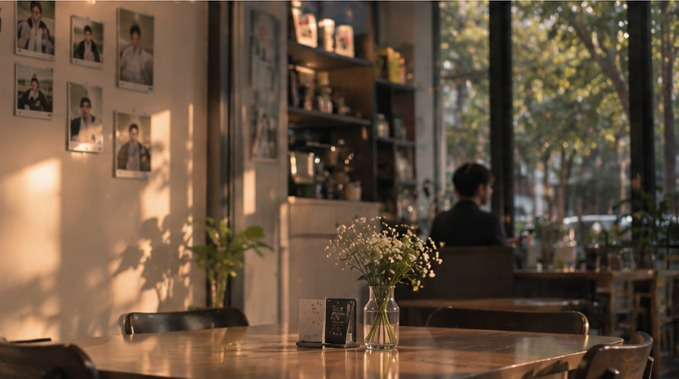
Trang 19 Nửa dưới (Ánh nắng chiều chiếu vào quán cafe vắng)Khi tình yêu dần biến thành những thói quen bình dị không tiếng nói
MV xoay quanh một cặp đôi đã đi qua giai đoạn nồng nhiệt ban đầu. Khi mọi cử chỉ trở thành nếp sống quen thuộc, chàng trai bắt đầu cảm thấy bạn gái không còn yêu mình như trước, dẫn đến những ngộ nhận và khoảng cách vô hình.
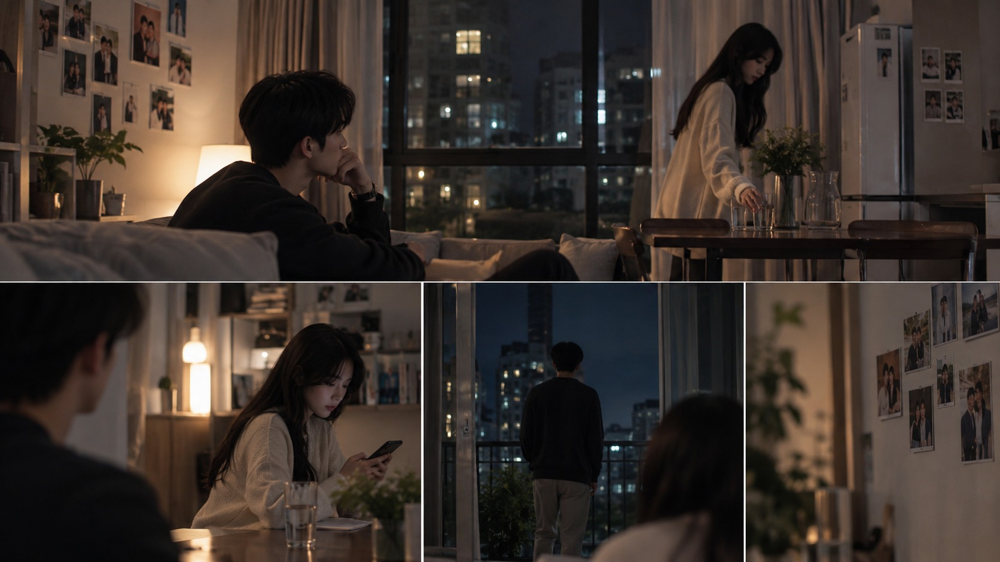
Trang 14 (Collage 4 cảnh sinh hoạt căn hộ chung)Hai người ở bên nhau nhưng thiếu đi sợi dây kết nối
Cùng sinh hoạt trong một không gian căn hộ quen thuộc nhưng mỗi người như thuộc về một thế giới riêng. Những cuộc trò chuyện trở nên ngắt quãng, cử chỉ quan tâm thưa dần. Chàng trai nhìn người yêu và nhận thấy một sự xa lạ khó gọi tên.
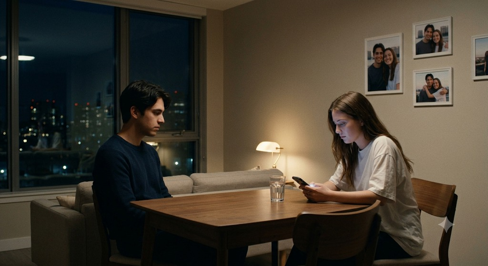
Trang 15 (Cảnh 2 người ngồi bàn gỗ đêm tối, xa cách)Ký ức ngọt ngào trở thành hình mẫu mà anh tha thiết muốn tìm lại
Sự im lặng của thực tại đẩy tâm trí chàng trai ngược dòng về những ngày đầu chớm nở. Trong hồi ức, cô gái luôn rạng rỡ, chủ động nắm lấy tay anh, dành cho anh sự nồng nhiệt vẹn nguyên từng phút giây.
Kỳ vọng đối diện thực tế: Thất vọng tích tụ thành hố sâu
Chàng trai chủ động đưa cô gái trở lại quán ăn kỷ niệm xưa, mong tìm lại hơi ấm ngày cũ. Nhưng cô gái mệt mỏi sau giờ làm, chỉ biết cúi đầu check tin nhắn điện thoại. Sự thất vọng dâng trào trong mắt chàng trai khi mọi nỗ lực đều trở nên lệch nhịp.
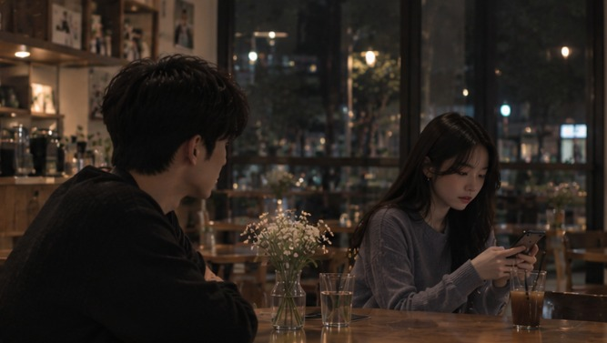
Trang 20 (Cảnh quán cafe tối, cô gái xem điện thoại, nam nhìn cô)Hai cơ thể cạnh bên nhưng hai tâm hồn ở hai thế giới
Hai người cùng bước đi trên con đường đêm quen thuộc nhưng bóng dáng tách rời. Chàng trai chìm sâu vào niềm tin cay đắng rằng tình yêu đã hoàn toàn biến mất, trong khi cô gái mang theo những áp lực và tổn thương không thể cất lời.
Cô chưa từng hết yêu: Sự lạnh nhạt là những hy sinh thầm lặng
Góc nhìn máy quay đảo chiều hé lộ sự thật cảm động: Cốc nước lẳng lặng đặt trên bàn thực chất là cốc trà gừng giải cảm; màn hình điện thoại là ứng dụng tìm món giải rượu cho bạn trai; bàn tay lỏng lẻo là do kiệt sức vì làm việc chăm lo cho tương lai chung.
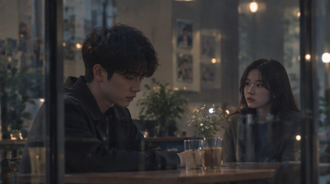
Trang 19 Nửa trên (Cận cảnh cặp đôi ngồi quán cafe, ánh sáng ấm áp)Sự thức tỉnh muộn màng và hy vọng tái sinh tình yêu
Cô gái cũng ngậm ngùi nhớ về chàng trai ngày xưa từng ân cần, lắng nghe. Chiếc áo khoác ấm đắp lên vai trong đêm tĩnh lặng mở ra khoảnh khắc thấu cảm qua bóng phản chiếu trên khung kính. Một kết thúc mở để khán giả tự tìm câu trả lời cho tình yêu của chính mình.
Nhạy cảm, nội tâm, sống thiên về cảm xúc và gắn chặt với hoài niệm quá khứ.
Luôn lấy sự nồng nhiệt thuở ban đầu làm chuẩn mực, không chấp nhận việc tình yêu chuyển sang dạng thức mới.
Vì mải chìm trong kỳ vọng bản thân mà vô tình biến thành người quan sát thụ động, không nhận ra những nỗ lực thầm lặng của đối phương.
Hành trình biến chuyển từ ngơ ngác đến cô độc cùng cực
Đường dây tâm lý của nhân vật nam di chuyển theo đường dốc xuống, thể hiện sự bế tắc của một người đàn ông yêu sâu đậm nhưng bất lực trong việc giao tiếp.
Dịu dàng, thực tế, nội tâm kiên định và đầy lòng trắc ẩn.
Tình yêu theo thời gian không còn phô diễn bằng lời nồng thắm mà hóa thành sự chăm sóc, chia sẻ gánh nặng cuộc sống.
Vừa chịu áp lực công việc, vừa cô đơn khi người yêu hiểu lầm sự im lặng của mình thành thái độ lạnh nhạt.
Hành trình cam chịu, tổn thương và lắng đọng
Tâm lý nhân vật nữ là mạch ngầm chảy ngược với chàng trai: bề ngoài bình thản, lạnh nhạt nhưng bên trong là sự quan tâm bền bỉ và nỗi đau không được sẻ chia.
Đối lập trong cảm nhận nhưng tương đồng trong chiều sâu cảm xúc
Không có ai đúng hay sai; mâu thuẫn nảy sinh từ sự lệch pha trong cách biểu đạt tình cảm.
Cả hai đều hướng về đối phương, đều mong muốn được ôm ấp và thấu cảm vẹn toàn.
Sự im lặng và định kiến cá nhân đã biến những thói quen đời thường thành vực thẳm cách ngăn.
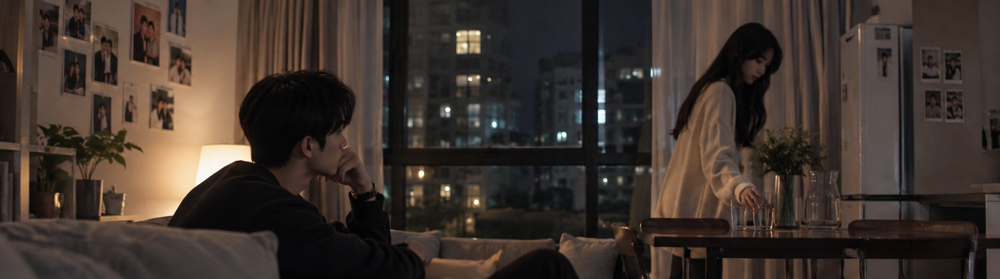
Trang 14 Góc trên (Hai người ngồi chung bàn nhưng ánh mắt xa xôi)Hệ thống màu sắc phân tách hai miền không-thời gian
Độ bão hòa thấp, tông lạnh gợi cảm giác trống trải, cô độc và xa cách.
Tông ấm rực rỡ, gợi cảm xúc ngọt ngào, hoài niệm và sự nồng nàn ban sơ.
Sự dung hòa tự nhiên, mang đến cảm giác chân thực, thấu cảm và lắng đọng.
Thiết kế ánh sáng kể chuyện (Cinematic Lighting Design)
Sử dụng ánh sáng tự nhiên yếu, nguồn sáng phụ xuyên qua cửa sổ mưa, bóng đổ sâu tạo bầu không khí tĩnh lặng, u buồn.
Ánh sáng vàng tự nhiên, nắng chiều xiên và hiệu ứng ngược sáng (Golden Hour Backlight) tạo chất thơ bay bổng, ấm áp.
Ánh sáng dịu nhẹ, trung tính, tập trung tiêu điểm vào đôi mắt và bóng phản chiếu trên khung cửa kính.
Phân cấp cỡ cảnh phục vụ biểu đạt tâm lý nhân vật
Nhấn mạnh khoảng cách vật lý và sự trơ trọi của con người giữa không gian rộng lớn.
Khắc họa các hành vi sinh hoạt đời thường và sự ngập ngừng trong tương tác cơ thể.
Bắt trọn vi biểu cảm trên khuôn mặt: ánh mắt trăn trở, khóe môi gượng gạo.
Tôn vinh các chi tiết biết nói: ngón tay buông lơi, tách trà nóng bốc khói, màn hình điện thoại.
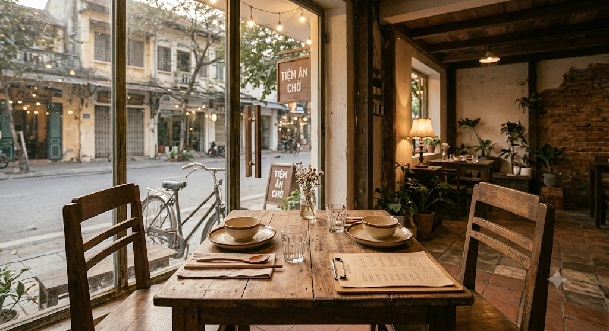
Trang 18 (Trung cảnh bàn ăn gỗ mộc)Bốn biểu tượng thị giác mang tính ẩn dụ cao
Biểu tượng của sự chờ đợi, áp lực công việc và rào cản kết nối vô hình giữa hai người.
Ranh giới ngăn cách giữa thế giới nội tâm khép kín và thành phố rộng lớn bên ngoài.
Đại diện cho cử chỉ quan tâm thầm lặng — từ cái siết tay thuở đầu đến bàn tay mỏi nhừ sau ca làm.
Tấm gương phản chiếu những tâm tư giấu kín, những điều không thể thổ lộ thành lời.
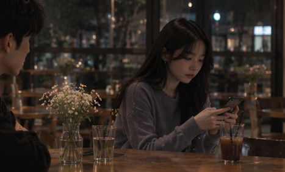
Trang 20 (Cận cảnh chiếc điện thoại sáng màn hình trên bàn)Thủ pháp điện ảnh phi tuyến tính & Chuyển đổi điểm nhìn
Đan cài song song giữa thực tại xám lạnh và hồi ức rực rỡ nhằm kích thích sự so sánh cảm xúc.
Bẻ ngoặt góc máy ở đoạn cao trào, giải mã toàn bộ những hiểu lầm bằng góc nhìn của cô gái.
Không áp đặt kết cục hạnh phúc hay chia tay, để lại dư âm suy ngẫm cho mỗi khán giả.
Intro nhạc nền + “Kìa màn đêm hiu hắt mang tên em…”
Căn hộ về đêm. Chàng trai ngồi bên bàn gỗ nhìn ra cửa sổ mưa rơi bên ngoài. Cô gái bước qua, lẳng lặng đặt cốc nước xuống bàn rồi rời đi không một lời nói.
Trung cảnh rộng => Trung cảnh; Ánh đèn vàng yếu, tông lạnh xanh xám, nhịp máy tĩnh lặng.
“Quay về trong ký ức của anh qua thời gian…”
Chàng trai nhìn cô gái với ánh mắt xa lạ và trầm tư. Cô gái ngồi sofa mải miết lướt điện thoại. Chàng trai quay mặt ra cửa sổ, miền ký ức bắt đầu ùa về.
Cận cảnh ánh mắt nam + Góc quay qua vai; Tông lạnh xám, ánh sáng mờ từ màn hình.
Pre-Chorus: “Này gió đừng hát và mang nỗi nhớ chạy đi…”
Chàng trai bước ra ban công, gió đêm lạnh thổi bay vạt áo. Anh nhớ lại ngày đầu gặp nhau. Phía trong phòng khách, cô gái ngồi trên sofa ngước nhìn theo bóng lưng anh.
Toàn cảnh ban công + Cận cảnh đôi tay bám lan can; Ánh sáng thành phố xa mờ, tông xanh lạnh.
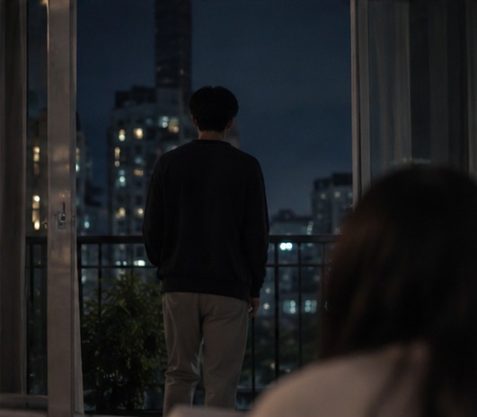
Trang 14 Góc dưới bên phải (Bóng lưng nam đứng ngoài ban công)Chorus 1: “Lạ lùng em tới… mà bao say mê ngỡ như trọn vẹn…”
Match cut chuyển sang Phần 2 (Hồi ức). Cô gái nở nụ cười rạng rỡ, chủ động chạy đến nắm lấy tay anh. Cả hai rảo bước dưới con đường ngập tràn sắc vàng ấm áp.
Cận cảnh mềm mại chuyển sang Trung cảnh 2 người; Ánh sáng hoàng hôn golden hour, tông cam vàng rực rỡ.
Post-Chorus 1: “Kìa nắng ngập tràn… Nhắn gửi em…”
Chàng trai đưa cô gái trở lại quán ăn kỷ niệm xưa. Anh hào hứng nhìn cô, nhưng cô gái mệt mỏi liên tục check tin nhắn công việc. Chàng trai hụt hẫng, lẳng lặng cụp mắt quay đi.
Trung cảnh dải bàn ăn đối diện; Cận cảnh biểu cảm hụt hẫng; Ánh sáng quán mờ tối, tạo bóng đổ ngăn cách.
Verse 2: “Kìa màn đêm hiu hắt mang tên em…”
Hai người đi bộ về trong đêm vắng. Chàng trai cố với tay nắm lấy tay cô gái nhưng các ngón tay cô lỏng lẻo vì mệt mỏi. Chàng trai từ từ buông tay, khoảng cách như bờ vực thẳm.
Toàn cảnh đường phố đêm + Cận cảnh hai bàn tay tách rời; Đèn đường ngả vàng, bóng hai người rẽ đôi.
Pre-Chorus 2: “Này gió đừng hát… Mưa thôi rơi trên từng góc phố…”
Trở về căn hộ. Chàng trai ngồi gục trên sofa trong cảm giác tuyệt vọng. Cô gái bước vào phòng ngủ, khựng lại ngoảnh nhìn anh với ánh mắt đau đáu rồi từ từ khép cánh cửa.
Góc quay xa từ góc phòng nhấn mạnh sự trống trải; Cận cảnh ánh nhìn đau đáu; Tông xám xanh lạnh lẽo.
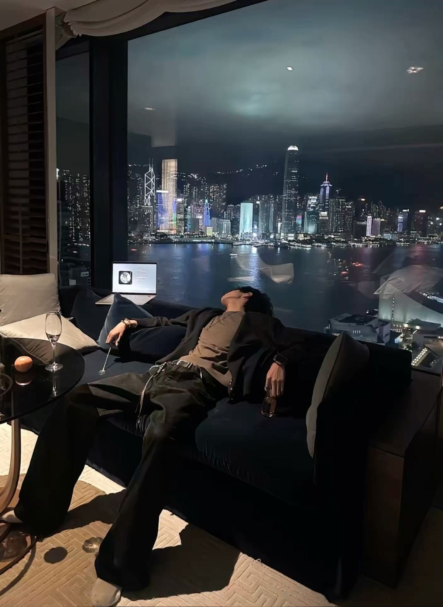
Trang 15 (Cảnh phòng khách tối, nam ngồi một mình trên sofa)Chorus 2: “Lạ lùng em tới… Hãy để anh được ôm lấy em…”
Cú chuyển góc nhìn sang cô gái: Cốc nước đầu phim là trà gừng cô ân cần pha cho anh; điện thoại là tìm món giải rượu và thuốc dạ dày; bàn tay mỏi nhừ sau ngày dài làm việc vì tương lai.
Góc máy Handheld di chuyển mềm mại, cận cảnh ánh mắt và nụ cười thầm lặng; Tông màu ấm dần lên dịu dàng.
Post-Chorus cuối + Fade out: “Kìa nắng ngập tràn… Nhắn gửi em…”
Cô gái nhẹ nhàng đắp áo khoác ấm lên vai chàng trai. Chàng trai giật mình tỉnh giấc, nhìn thấy hình ảnh cô qua bóng phản chiếu trên khung kính. Ánh mắt giao thoa thấu cảm. Mờ dần.
Cận cảnh bóng phản chiếu trên kính + Trung cảnh hai người tựa đầu vào nhau; Ánh đèn vàng ấm áp, chuyển tiếp từ lạnh sang ấm.
Gương mặt sáng, đường nét thanh tú, tóc đen tự nhiên, phong cách tối giản thanh lịch.
Trầm tĩnh, có chiều sâu, tạo cảm giác một người đàn ông chất chứa nhiều suy tư và giàu nội cảm.
Lột tả trọn vẹn những xung đột nội tâm qua ánh mắt, bờ môi và những cử chỉ vi tế mà không cần đối thoại.
Nét đẹp thuần khiết, dịu dàng nhưng độc lập; gương mặt mềm mại, nụ cười trong trẻo.
Thể hiện nhuần nhuyễn hai lớp cảm xúc: sự hồn nhiên nồng nhiệt trong ký ức và nét mệt mỏi, thu mình ở hiện tại.
Đem lại sự đồng cảm tuyệt đối cho người xem khi hé lộ góc nhìn hy sinh thầm lặng của người phụ nữ.
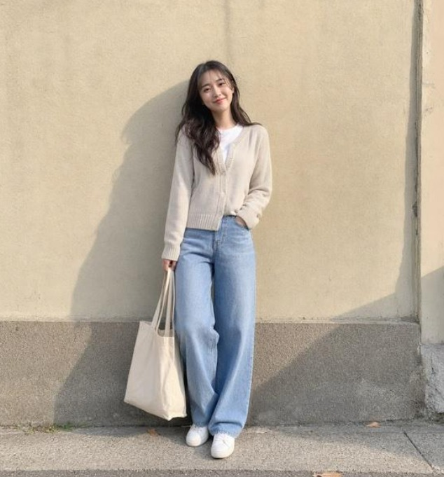
Hiện tại: Dịu dàng, thu mìnhBa không gian mang tính ẩn dụ thị giác cốt lõi
Nội thất tối giản, tone xám lạnh; nơi hai người bên nhau nhưng tồn tại khoảng cách vật lý và tâm lý sâu sắc.
Hàng cây dài thẳng tắp; ẩn dụ cho hành trình tình yêu từng đồng hành nhưng dần lệch nhịp bước chân.
Bàn gỗ mộc, cửa kính ngập tràn ánh sáng; chiếc neo thời gian dùng để đo đếm sự đổi thay cảm xúc qua hai thời kỳ.
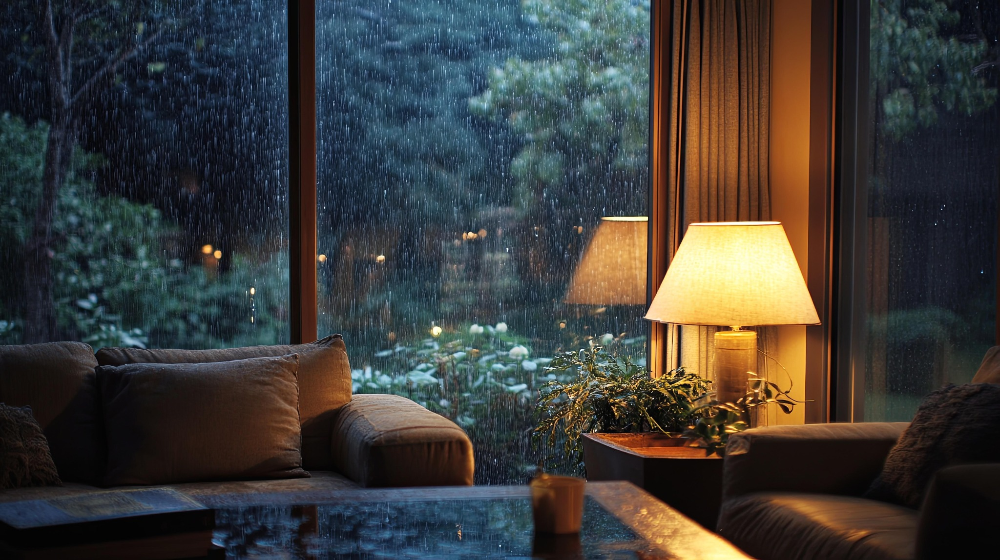
Bối cảnh 2: Cửa sổ mưa căn hộSự chuyển biến trang phục và các chi tiết xuyên suốt
Từ áo len kem, sơ mi sáng màu, sneaker trắng (cởi mở) chuyển sang áo len xám than, áo khoác navy, quần âu tối màu (thu mình).
Từ cardigan trắng ngà, chân váy hồng pastel (trong trẻo) chuyển sang sơ mi trắng, cardigan xám xanh, denim sẫm (trưởng thành, thực tế).
Chiếc kẹp tóc của nữ và đồng hồ của nam — những vật chứng tình yêu bất biến kết nối quá khứ và thực tại.
Thủ pháp quay dựng định hình phong cách điện ảnh Indie
Trung cảnh, cận cảnh ánh mắt, góc qua vai và khuôn hình có vật cản tiền cảnh nhằm giới hạn thông tin, gia tăng cảm giác cô độc.
Góc máy linh hoạt, chuyển động mềm theo bước chân, cận cảnh bàn tay chạm nhau và nụ cười rạng rỡ.
Máy quay cầm tay (Handheld) tạo độ rung tự nhiên, ấm áp, gắn kết trực tiếp với hơi thở nhân vật.
Match cut bàn tay, Chuyển cảnh qua vật thể (khung cửa, bóng người), Phản chiếu qua gương kính và Lặp lại khuôn hình.
“Một tác phẩm không phán xét đúng sai, chỉ mong gợi nhắc mỗi người hãy dừng lại một nhịp để nhìn vào mắt người thương.”
KẾ HOẠCH SẢN XUẤT MV • LẠ LÙNG (VŨ)